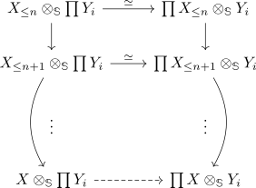

tensor product with a finite type spectrum preserves arbitrary products of n-connective spectra
Proposition
Let $X$ be a finite type spectrum, then the functor
preserves products of $n$ connective spectra.
Proof
I dont think this is a good written proof :/
Let $X_i$ be $n$ connective spectra and $\prod Y_i$ the product. Then $\prod Y_i$ is also $n$ connective, since the category of $n$ connective spectra is closed under arbitrary (co-)products (cf. product of connective spectra is connective, product of connective maps of spectra is connective).
We need to show that there exists an equivalence $X \otimes_{\mathbb{S}} (\prod Y_i) \simeq \prod_{i \in I} X \otimes_{\mathbb{S}} \prod Y_i$
let $X_{\leq n}$ be the finite spectra consisting of cells of dimension $\leq n$ such that $X \simeq \mathrm{colim}_{n \in \mathbb{N}} X_n$. In particular $X_n \rightarrow \mathrm{colim}_{n \in \mathbb{N}} X_n$ is (roughly) n connective.
Moreover, we have a diagram

where we may coinitially approximate by forgetting all $X_{\leq m}$ for $m < n$. Then all vertical morphisms are roughly n connective. Using colimit of spectra with eventually constant homotopy groups shows that the map $\prod X_{\leq n} \otimes_{\mathbb{S}} Y_i \rightarrow \prod X \otimes_{\mathbb{S}} Y_i$ is roughly n connective (cf. product of connective maps of spectra is connective). This shows that the map $X \otimes_{\mathbb{S}} \prod Y_i \rightarrow \prod X \otimes_{\mathbb{S}} Y_i$ is roughly n connective for all $n$ or an equivalence